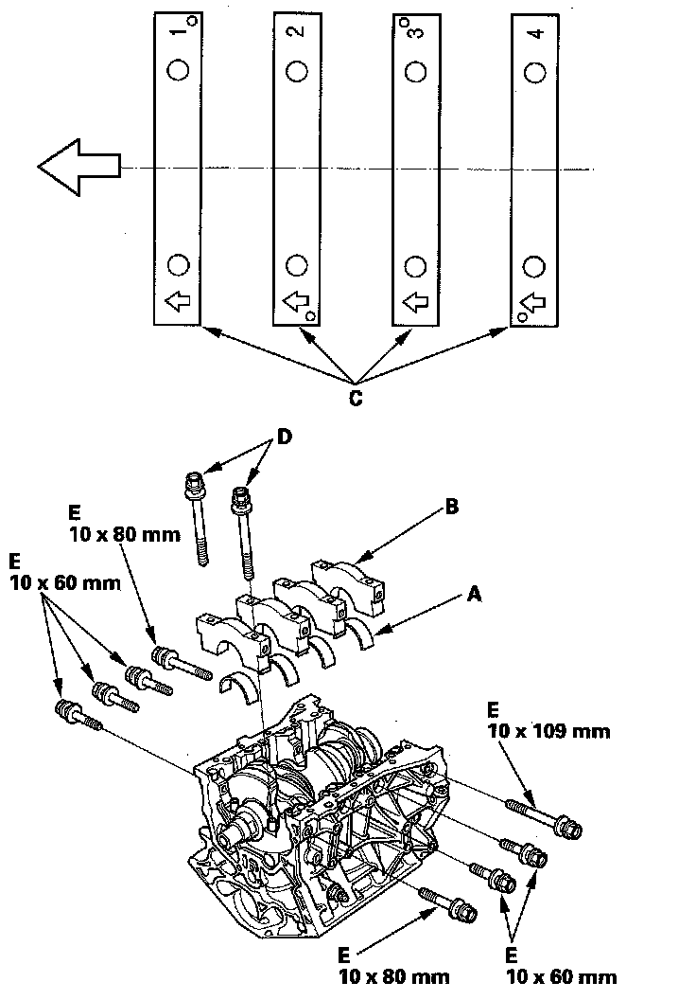
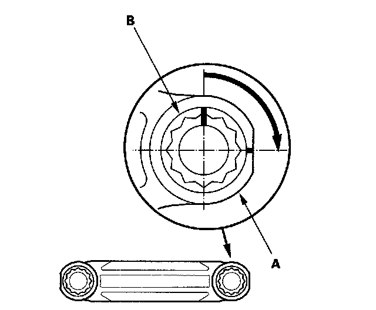
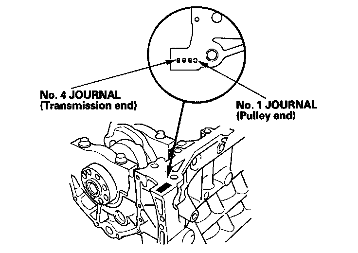
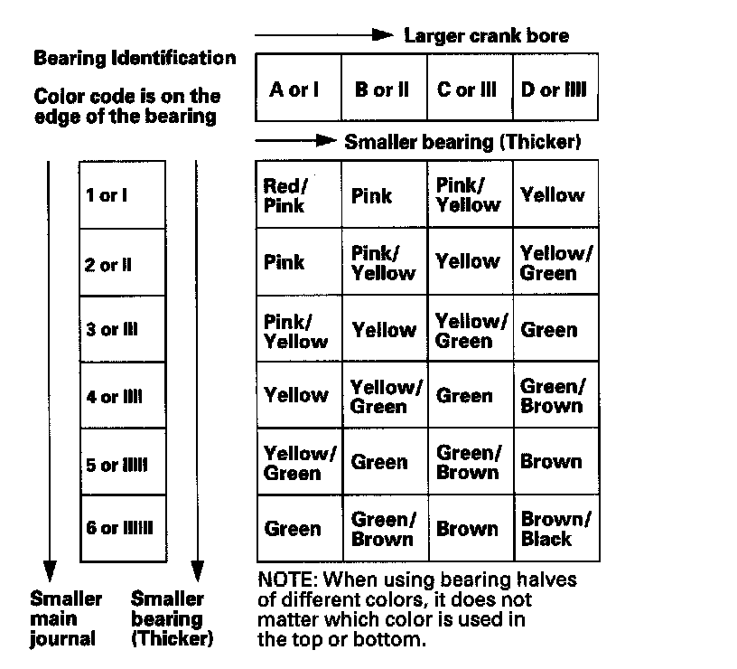
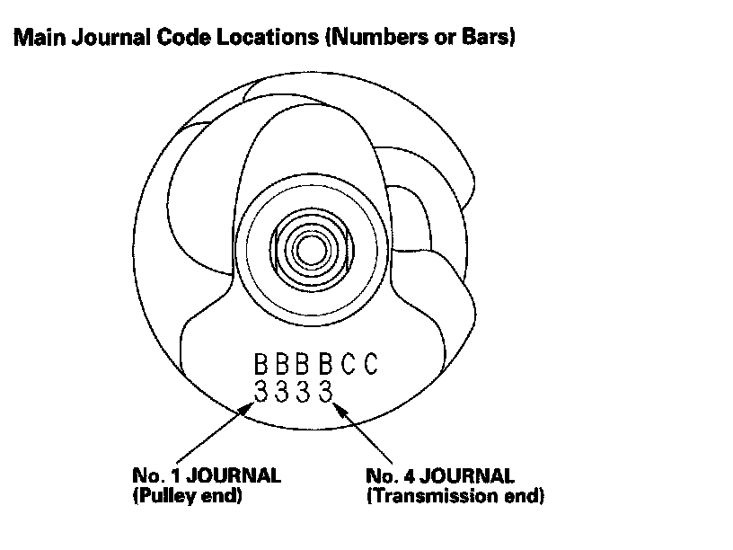

Crankshaft Main Bearing
Crankshaft BearingMain bearing-to-journal oil clearance
Standard or New 0.019 - 0.045 mm (0.0007 - 0.0018 in.)
Service Limit 0.050 mm (0.0020 in.)
Rod bearing clearance
Standard or New 0.020 - 0.044 mm (0.0008 - 0.0017 in.)
Service Limit 0.050 mm (0.0020 in.)
Main Bearing Cap
Install the bearings (A) and bearing caps (B) with the arrow (C) facing the timing belt end of the engine.

Apply new engine oil to the bolt threads and flanges. Torque the bolts (B) to 20 N-m (2.0 kgf-m, 14 lbf-ft).

Tighten the bolt until the mark on the bolt head lines up with the mark on the connecting rod (turn the bolt 90°).
Crankshaft Bore Code Location


